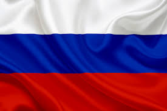

Our events
Russian Independence Day
In order to celebrate Russian Independence Day, everything is half off on June 12th.
Ukrainian Independence Day

For Ukrainian Independence Day, both of the dishes Borscht and Kotlet will be half off on August 24th.
New Years Day

Lastly, for New Years Day, butterbrod and cheburek will be half off as those dishes are usually eaten at parties
Created By: L Kapsa Updated: Sept 27th 2020